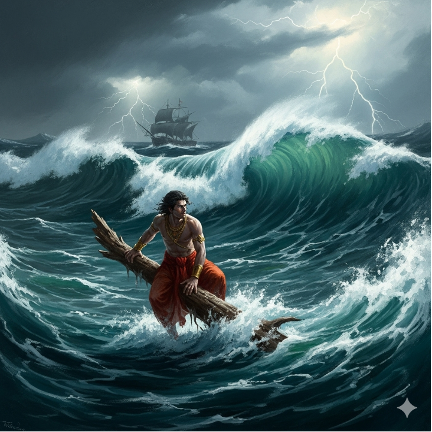
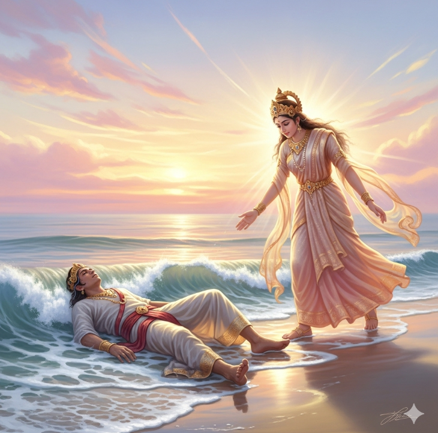
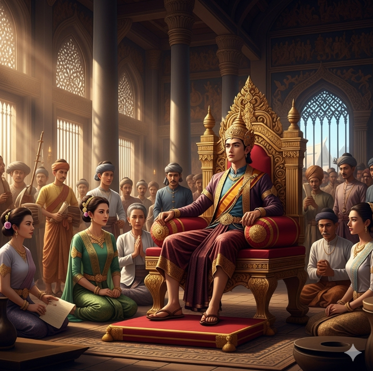
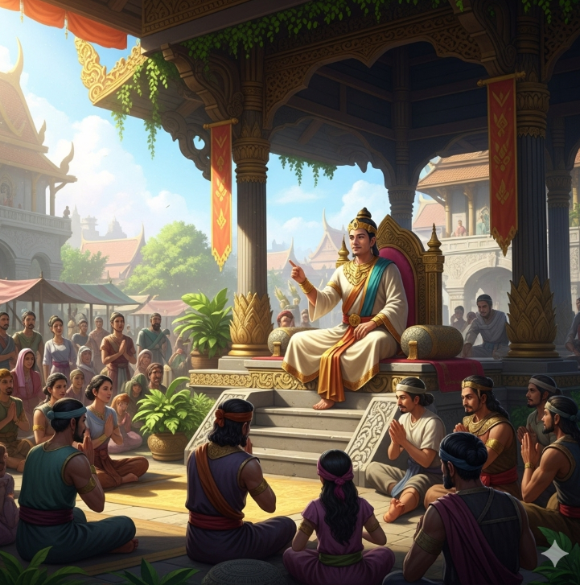
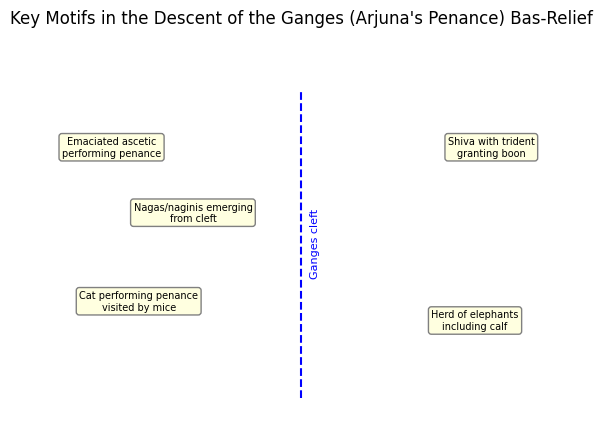
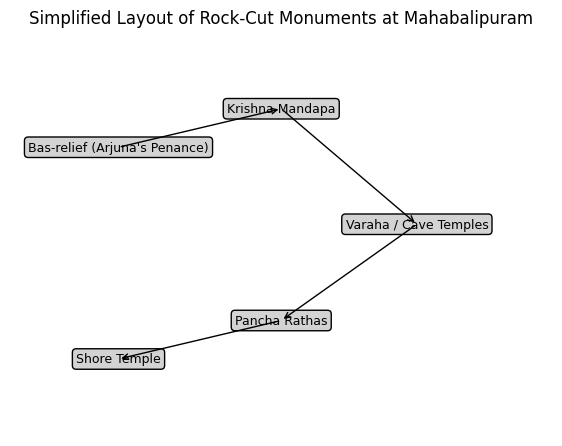
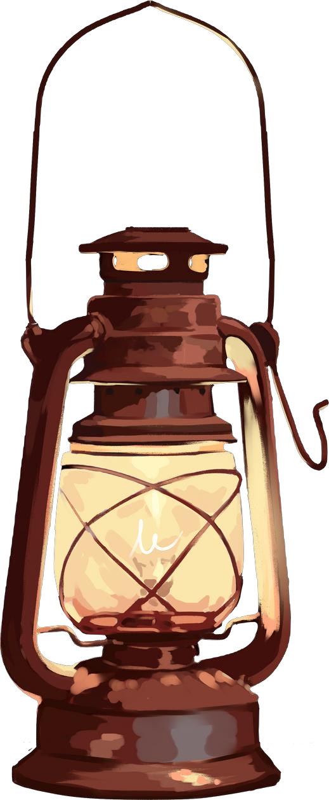
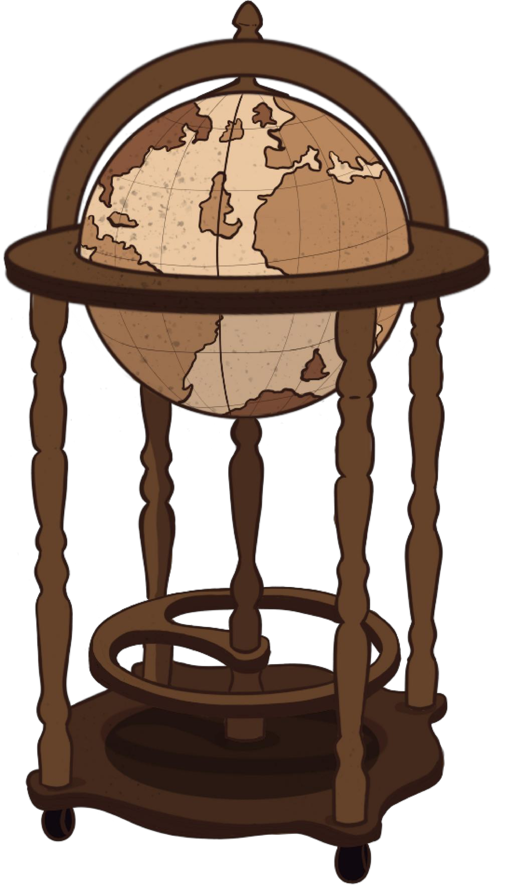
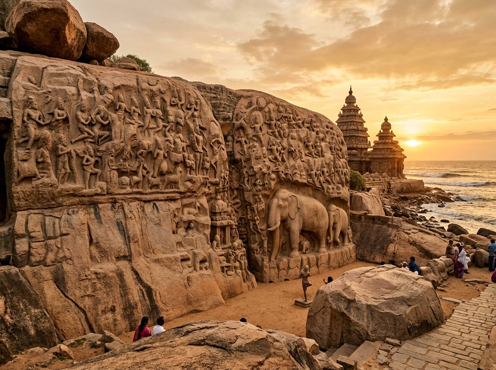

Chronicles of Indian Art
A comprehensive digital academic portal celebrating 4,500 years of classical Indian artistic genius. Explore an interactive 14-masterpiece chronological timeline, a geospatial heritage origin map, Ajanta Cave mural narratives, Mahabalipuram monolithic sculpture analysis, and regional folk-classical fusion paintings.
Interactive Art Timeline
Chronological digital museum journey across 14 canonical Indian art masterpieces spanning 2500 BCE to 1760 CE with era filters and clickable virtual replicas with rich historical context.
Geographic Origin Map
Geospatial dark canvas map of India pinpointing 14 masterwork origins from Mohenjo-Daro, Sanchi, and Ajanta to Ellora, Konark, and Thanjavur with fly-to pills and slide-out inspection.
Cave Paintings Storyboard
Visual narrative reimagining of the Mahajanaka Jataka from Ajanta Cave 1 into a four-panel graphic novel sequence exploring dilemma, shipwreck, struggle, and salvation.
Sculpture Thematic Analysis
In-depth academic paper and thematic analysis of the rock-cut sculptures of Mahabalipuram — examining the Descent of the Ganges bas-relief, Pancha Rathas, and pastoral realism.
Regional Art & Modern Fusion
Synthesizing regional Indian folk and classical styles (Warli-Kalamkari, Madhubani-Pattachitra, Gond-Tanjore) alongside S.H. Raza's meditative 'Bindu' modern recreation.
Academic Project Contributors
Department of Computing Technologies • SRM Institute of Science and Technology • 21LEM301T
Nisheed Kumar Rout
RA2411003011822Rudra Prakash Swain
RA2411003011778Abhinav Singh Bhadauria
RA2411003011820Krishan Kumar
RA2411003011812Samant Kumar Mishra
RA2411003011790Project 1: Interactive Timeline with Artifacts
Project 4: Cave Paintings Storyboard (The Mahajanaka Jataka)

Click to Zoom1. The Prince's Dilemma
Prince Mahajanaka decides to travel by sea in pursuit of wealth, unaware of the impending oceanic perils. Clad in royal vestments, he stands steadfast in his conviction to restore prosperity to Mithila.

Click to Zoom2. The Oceanic Shipwreck
The ship sinks in the middle of the violent ocean. While his crew collapses in terror, the prince struggles with absolute determination to survive, leaping far into the waters.

Click to Zoom3. Struggle for Survival
For days, Mahajanaka swims tirelessly through the endless blue abyss, holding onto his unshakeable faith, inner strength, and moral virtue.

Click to Zoom4. Divine Intervention
The goddess Manimekhala rescues the exhausted prince from the depths, symbolizing divine grace, spiritual triumph, and righteous perseverance.
Ajanta Mural Techniques & Storyboard Translation
Continuous Narrative in Ajanta
Ajanta's ancient masters did not enclose scenes in rectangular comic frames. Instead, they employed continuous narration (synoptic narrative) across continuous rock-cut walls. Multiple temporal stages of Mahajanaka's life — his departure, shipwreck, ocean ordeal, and rescue — co-existed harmoniously within continuous architectural settings and landscape elements. Our storyboard reinterprets this classical compositional fluidity into discrete, high-impact sequential panels suited for modern visual storytelling.
Fresco Secco / Tempera Execution
Unlike European wet fresco (buon fresco), Ajanta murals are tempera paintings on dry mud plaster (secco). The volcanic basalt rock walls were layered with mud, ferruginous clay, cow dung, and rice husks, smoothed with fine lime wash (chunam). Pigments mixed with organic animal glue binders were applied on the dry surface, allowing extraordinarily refined gradient blending, expressive almond eyes, and three-dimensional bodily volume.
Philosophical & Symbolic Depth
The Mahajanaka Jataka is not merely a tale of physical survival; it is an allegorical exposition of Viriya Paramita (perfection of energetic perseverance). The turbulent sea signifies the ocean of worldly suffering (samsara), the shipwreck represents unexpected karmic tribulations, and Manimekhala's intervention exemplifies the law that cosmic grace rewards relentless moral steadfastness.
Classical Ajanta Mineral Pigment Palette
Lapis Lazuli
Imported Badakhshan • Celestial BlueRed Ochre (Gairika)
Ferric Deccan Earth • Warm ContourYellow Ochre (Haritala)
Natural Clay • Royal OrnamentsTerre Verte
Green Silicate Earth • FoliageKaolin & Gypsum
Purified Chalk • Highlights & ChunamLamp Black (Kajal)
Vegetal Soot • Expressive OutlinesProject 5: Sculpture Thematic Analysis (Mahabalipuram)
Introduction & The Pallava Rock-Cut Landscape
Mahabalipuram (Mamallapuram), situated on the wind-swept Coromandel Coast of Tamil Nadu, represents one of the most astonishing monumental achievements in ancient South Asian art. Under the visionary patronage of the Pallava dynasty — predominantly King Mahendravarman I (r. 600–630 CE) and his son Narasimhavarman I 'Mamalla' (r. 630–668 CE) — granitic coastal boulders and whaleback ridges were systematically sculpted into cave temples, freestanding monolithic shrines, and towering narrative reliefs.
Inscribed as a UNESCO World Heritage Site in 1984, Mahabalipuram served not only as a sacred pilgrimage center but as a pivotal mercantile harbor along the Indian Ocean maritime silk routes connecting South India to Sri Lanka, Java, Sumatra, and the Khmer Empire. The site exhibits four distinct structural categories: (1) Mandapas (pillared rock-cut cave temples), (2) Rathas (monolithic free-standing shrines carved top-down from single granite outcrops), (3) Open-air Bas-Reliefs (cliff-face narrative friezes), and (4) Structural Temples (such as the maritime Shore Temple).
The Epic Bas-Relief: Descent of the Ganges (Arjuna's Penance)
Spanning an astounding 96 feet in length and 43 feet in height across two colossal natural granite boulders, the Descent of the Ganges (also known as Arjuna's Penance) is the world's largest open-air rock relief. Pallava artisans ingeniously utilized the natural vertical cleft separating the two boulders to represent the cosmic descent of the sacred river Ganga from the celestial heavens to sanctify the earthly plane.
Iconographic Anatomy of Key Motifs

Narrative Synthesis of the Relief
The brilliance of this relief lies in its polysemic ambiguity — simultaneously narrating Bhagiratha's prayer to wash away the ashes of his ancestors and Arjuna's quest in the Mahabharata. By uniting wild fauna, domestic pastoral life, ascetics, and cosmic gods, the monument asserts that the sacred pervades every crevice of nature.
UNESCO Masterpiece • 7th Century CEArchitectural Evolution: The Pancha Rathas
Located to the south of Mamallapuram, the Pancha Rathas (Five Chariots) are monolithic architectural prototypes carved directly from a single massive whaleback outcrop of granite. Dedicated to the five Pandava brothers and Draupadi from the Mahabharata, these shrines do not represent functional temples (their sanctums were never consecrated) but served as experimental, life-sized architectural models in stone:
• Dharmaraja Ratha: The tallest and most ornate monolithic shrine, featuring a square plan, multi-tiered Dravidian vimana (pyramidal tower), octagonal shikhara, and carved royal portraits of Narasimhavarman I flanked by dvarapalas.
• Bhima Ratha: A massive rectangular pavilion characterized by an elongated barrel-vaulted roof (sala-shikhara) inspired by ancient wooden Buddhist chaitya assembly halls, supported by seated lion pillars.
• Arjuna Ratha: A two-tiered square vimana mirroring the Dharmaraja Ratha with masterfully carved niches depicting Shiva, Vishnu, Indra on Airavata, and graceful courtly couples.
• Draupadi Ratha: The smallest shrine, designed as a simple village thatched hut with curved Bengali bangala roof eaves, dedicated to Goddess Durga whose idol is flanked by kneeling devotees.
• Nakula-Sahadeva Ratha: Features an apsidal (horseshoe-shaped) vimana known as gajaprishta (elephant's backside), standing alongside a life-sized monolithic granite elephant.
Cave Sanctuaries & Dramatic Reliefs
Inside the pillared cave mandapas, Pallava sculptors achieved extraordinary compositional drama and emotional tension. In the Mahishasuramardini Cave, the relief of Goddess Durga vanquishing the buffalo demon Mahishasura is hailed as a zenith of classical Indian sculpture. Riding a ferocious lion, the eight-armed Durga lunges forward with bow drawn taut, exuding righteous serenity, while the colossal, armored buffalo demon staggers backward in imminent defeat.
Opposite Durga, a complementary panel portrays Vishnu Anantasayana reclining in cosmic sleep upon the coiled serpent Adishesha, peacefully dreaming the cosmos into existence while demons Madhu and Kaitabha hesitate in awe. In the Varaha Cave, Vishnu's boar avatar Varaha strides vigorously from the cosmic waters, gently lifting the delicate earth goddess Bhudevi upon his right arm — symbolizing divine restoration and the king's role as protector.
Synthesis of the Natural and the Divine: Pastoral Realism
A striking divergence from rigid courtly iconography at Mahabalipuram is the celebration of rural, pastoral intimacy. In the Krishna Mandapa, Lord Krishna is depicted lifting Mount Govardhana on the tip of his finger to shelter the cowherds and cattle of Vrindavan from Indra's torrential storm.
Beneath the mountain, the sculptor captures everyday agrarian life with profound tenderness: a cowherd milkman sitting on his haunches milking a cow while the mother cow lovingly licks her newborn calf; a village woman balancing milk pots on her head; a woodcutter with an axe; and an old grandfather carrying a child on his shoulders. This humanistic portrayal anticipates the democratic, emotionally accessible spirit of the emerging Bhakti movement in early medieval Tamilakam.
Political Legitimacy, Royal Patronage & Maritime Legacy
Beyond their religious sanctity, Mahabalipuram's monuments functioned as potent imperial proclamations. King Narasimhavarman I adopted the title Mamalla ('Great Wrestler') following his triumphant sack of the Western Chalukyan capital of Vatapi (Badami) in 642 CE. The divine rescue themes (Varaha lifting Bhudevi, Krishna sheltering the cowherds, Durga vanquishing Mahishasura) served as royal allegories portraying the Pallava monarch as an earthly savior of his subjects.
As a bustling maritime trade emporium, foreign merchants from China, Rome, and Southeast Asia disembarked at Mamallapuram's shores. The towering rock-cut reliefs and the maritime Shore Temple (built by Narasimhavarman II Rajasimha in the 8th Century) acted as colossal cultural beacons visible from passing merchant vessels, broadcasting the aesthetic opulence and religious cosmopolitanism of the Pallava realm across the Bay of Bengal.
Artistic, Religious & Cultural Legacy
The experimental genius of Mahabalipuram laid the bedrock for South Indian temple architecture for the next millennium. Its innovative column capitals carved with seated vyalas (lions), multi-tiered pyramidal vimanas, and barrel-vaulted salas directly shaped the architectural vocabulary of the Imperial Cholas (Brihadisvara at Thanjavur), the Hoysalas, and the Vijayanagara Empire at Hampi.
Through maritime cultural diffusion, Pallava sculptural sensibilities migrated across Southeast Asia, noticeably influencing early Hindu-Buddhist stone sanctuaries in Champa (Vietnam), Angkor (Cambodia), and Java (Prambanan). Mahabalipuram remains an eternal testament to how human devotion, royal ambition, and granite cliffs converged into timeless artistic heritage.
Monumental Gallery: Mahabalipuram Photographic Survey
Click any monument photograph to inspect architectural detailing and high-resolution stone craftsmanship.




Project 6: Regional Painting Fusion Project & Modern Heritage
Part A: Regional Painting Fusion Masterpieces
Three distinct fusion works examining the dialogue between minimalism and ornamental intricacy, epic narrative traditions, and tribal animism blended with royal opulence.

1. Fusion of Warli & Kalamkari
This artwork blends the geometric stick-figure motifs of Warli art with the ornamental floral borders and intricate line work of Kalamkari. The human figures are simple, linear, and white on a dark rustic ground, while the surrounding decorative vine patterns and mythological elements reflect Kalamkari's narrative storytelling.

2. Fusion of Madhubani & Pattachitra
Merges Madhubani's bold primary colors, double-line borders, and almond-eyed stylized profiles with Pattachitra's graceful postures and mythological themes. Every fraction of space is decorated with floral infill, a signature shared between Mithila women's wall art and Odisha's cloth scroll painters.

3. Fusion of Gond & Tanjore
Fuses Gond's tribal style of repetitive dotted textures and animated wildlife motifs with Thanjavur's (Tanjore) opulent 22-karat gold foil relief, semiprecious stones, and divine iconography. The central sacred subject is adorned with organic Gond line work inside a regal, gold-embossed classical frame.

S. H. Raza's "Bindu" (Progressive Artists' Group)
Syed Haider Raza (1922–2016), a founding member of the revolutionary Progressive Artists' Group (PAG) in Bombay, modernized Indian art by integrating European abstraction with ancient Vedic and Tantric philosophical concepts.
Our student digital recreation honors Raza's geometric discipline. Centered on the dense black circular point surrounded by radiating orange, crimson, cobalt, and ochre triangles, the work explores meditation through structural balance, vibrant chromatic resonance, and pure non-representational form.
| Element | Raza's Original Masterwork | Student Digital Recreation |
|---|---|---|
| Medium | Heavy acrylic / oil impasto on textured canvas | High-precision vector & digital pigment brushwork |
| Surface Texture | Organic, visible rhythmic brushstrokes with depth | Crisp geometric edges, flat luminous color fields |
| Emotional Tone | Decades of internalized yogic meditation | Analytical study of sacred geometry and color theory |
| Cosmic Core | Pulsating black void as infinite potential | Focal black Bindu ringed with warm solar saffron |